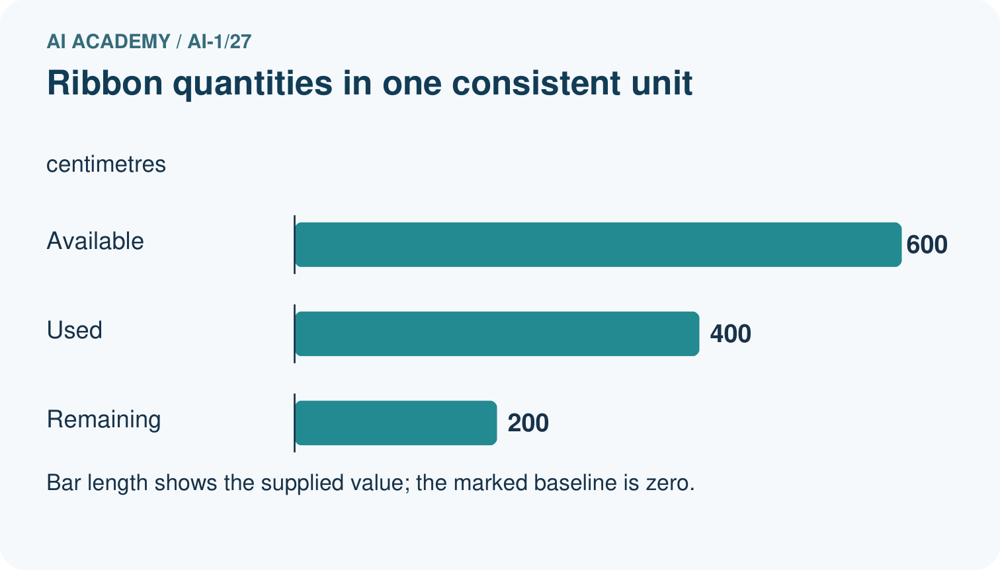
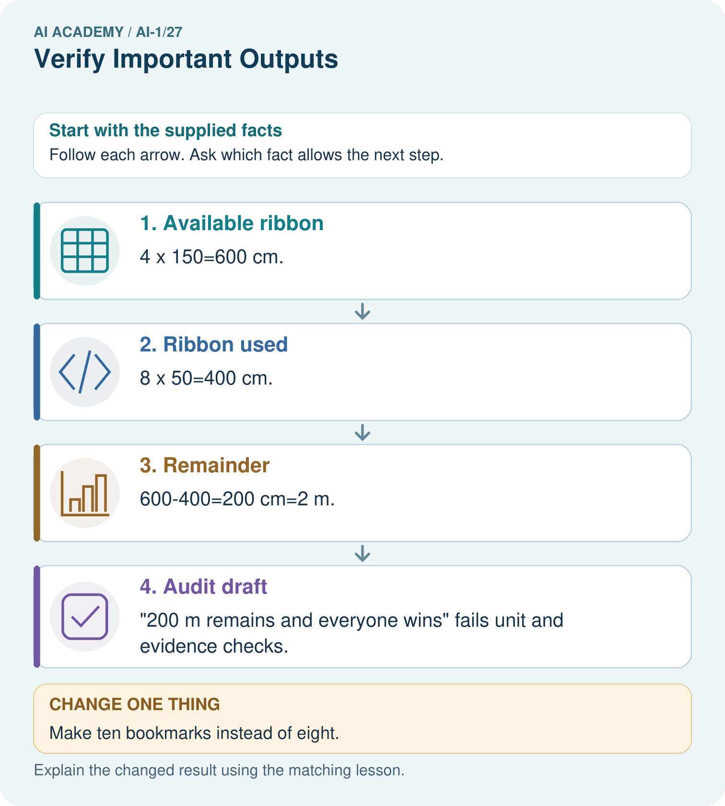
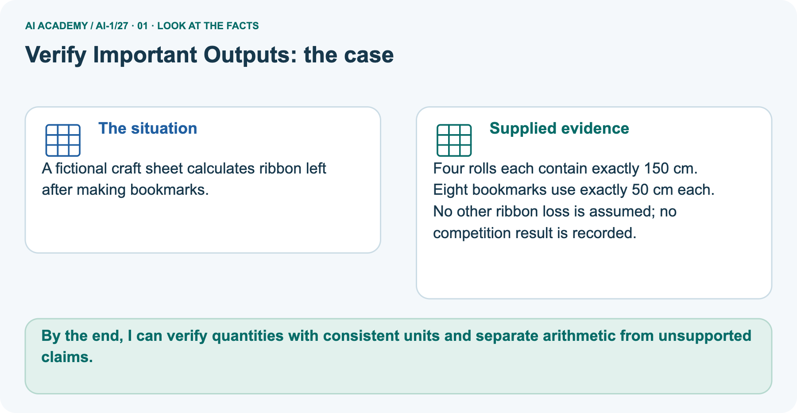
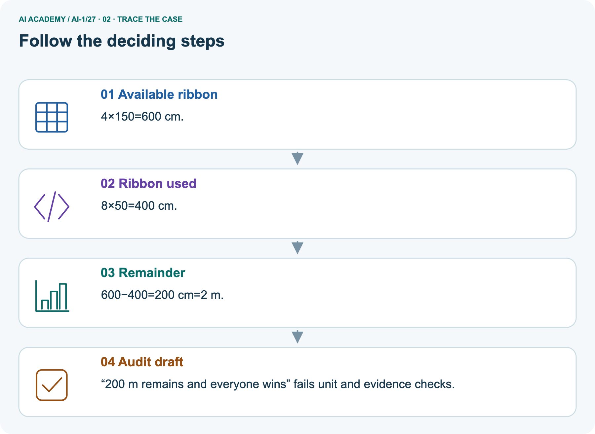
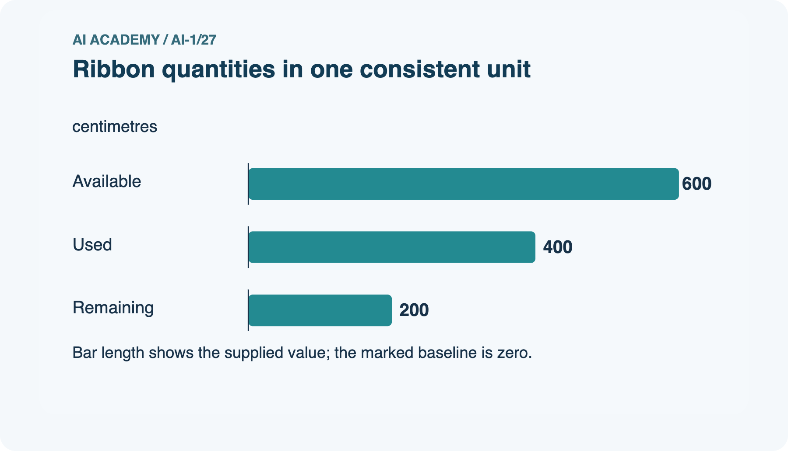
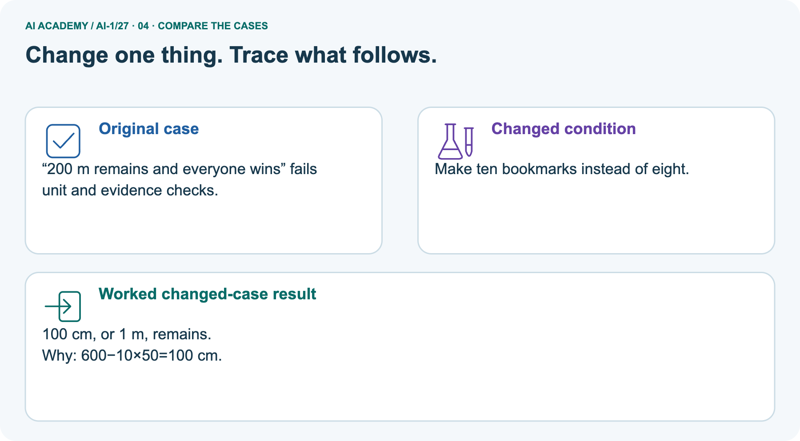
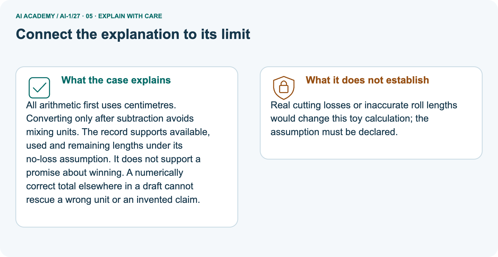
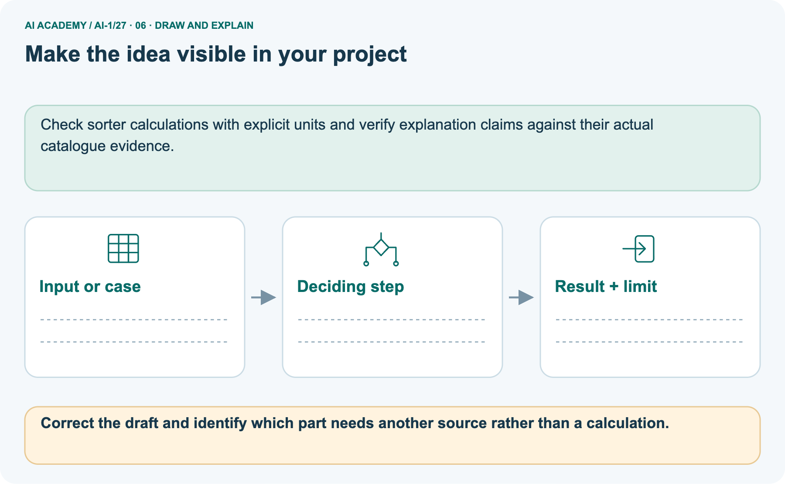

AI Academy · Level 1 · Grade 6 · Week 27 · Workbook
Verify Important Outputs
Learn to understand, design, build, test and explain AI systems responsibly.
Project: Helpful Classroom Sorter
Workbook · 1 of 21
Recall and choose your starting point
Record your starting explanation for Verify Important Outputs before opening notes. Show any later correction separately.
Try the recall before opening notes. Then use a different colour or a labelled second line to correct your explanation.
Prompts Are Design Instructions
Without opening the old lesson, explain one key idea from Prompts Are Design Instructions. Give an example and a mistake that the idea helps you avoid.
Privacy by Choosing Less
Without opening the old lesson, explain one key idea from Privacy by Choosing Less. Give an example and a mistake that the idea helps you avoid.
Good Data, Bad Data
Without opening the old lesson, explain one key idea from Good Data, Bad Data. Give an example and a mistake that the idea helps you avoid.
Workbook · 2 of 21
Practise with fading help
Complete the supported Verify Important Outputs trace and record the first step you can explain without help.
Use W2: Repair a unit error for Verifying claims and quantities. Record the answer once; the lesson and workbook refer to the same attempt.
| Given inputs | Procedure I chose | Middle steps | Result and check |
|---|---|---|---|
Workbook · 3 of 21
Individual reasoning check
Check the proposed Verify Important Outputs explanation against the supplied facts before discussing it.
Use the worked case for Verifying claims and quantities. Proposed explanation: “A citation proves every nearby claim”. Decide whether this explanation is supported.
Point to the step or supplied fact that decides; explain your repair if needed.
Workbook · 4 of 21
Independent transfer case
Write one first attempt at the reserved independent case before feedback. Repeated copies of that case refer to the same recorded attempt.
Independent case: Audit a new model with mass units
Fictional craft card M states five sealed bags of modelling material at exactly 250 g per bag. Three models each use 300 g, with no other loss.
A draft says “M supplies 1250 g; the models use 900 g; 350 kg remains; every model will win a prize.” Check all four claims, show the remaining mass in grams, and explain the status of the prize claim. Use 1 kg = 1000 g.
Attempt this case before feedback. Record any help. Earlier examples below are further practice; a case already practised with feedback cannot establish fresh transfer.
Workbook · 5 of 21
Your learning target
Connect the Verify Important Outputs target to a trace and a justified conclusion.
A generated report says 18 of 24 tests passed, so success was 80%. Verify the claim in two ways and write a corrected sentence.
Workbook · 6 of 21
Solve the given case
Solve the supplied Verify Important Outputs case and show the deciding evidence.
An answer says six groups of four make 28.
Verify independently.
Show your trace, calculation or evidence
Workbook · 7 of 21
Check a changed case
Apply the procedure to the changed case and record why the conclusion follows.
An assistant says the school library opens at 8, but today's official notice says 9. Which source should guide today's visit? Explain the check.
My independent answer and reason
Week 27 Test and reflect
Workbook · 8 of 21
Design a revealing test
Specify a changed input, expected result and observation separately.
Create a changed input, boundary case or missing-information case. Write the expected answer or safe response before testing.
| Test record | My evidence |
|---|---|
| Changed input or condition | |
| Expected answer or fallback | |
| Observed result | |
| Why the result occurred |
Workbook · 9 of 21
Project checkpoint
Justify what Verify Important Outputs adds to Helpful Classroom Sorter and keep the evidence.
Require human confirmation for important sorter outputs and attach the evidence record used to approve each rule or label.
The project change and evidence I will keep
Workbook · 10 of 21
Self check
Judge explanation, evidence, transfer and limits separately; attach the work behind your judgement.
- I can explain the mechanism.
- I can show evidence.
- I can handle a changed case.
- I can name a limit.
Mark each as not yet, with help or independently, and attach supporting work.
Teacher review ____________________ Next step ____________________
Workbook · 11 of 21
Transfer practice from the original programme
Use this earlier case as transfer practice. A case already discussed with feedback is not fresh assessment evidence.
A generated report says 18 of 24 tests passed, so success was 80%. Verify the claim in two ways and write a corrected sentence.
Record support used: none, hint or teacher explanation.
Workbook · 12 of 21
W1 Separate source facts from derived quantities
Separate source facts from derived quantities. Apply the supplied Verify Important Outputs facts and keep your reasoning.
Using R, identify a directly stated fact and a quantity that must be calculated. Give the source or expression for each. Explain why a citation to R does not verify the claim that every participant will enjoy the activity.
Workbook · 13 of 21
W2 Repair a unit error
Repair a unit error. Apply the supplied Verify Important Outputs facts and keep your reasoning.
A report calculates 12 × 50 = 600 and labels the result metres. Use R to correct the unit, convert the result to metres and calculate the remaining length.
Give a second arithmetic route or a check using starting, used and remaining lengths.
Workbook · 14 of 21
W3 Do not count copied claims as separate evidence
Do not count copied claims as separate evidence. Apply the supplied Verify Important Outputs facts and keep your reasoning.
Three posters say 600 metres were used, but all copied one draft. A fourth poster cites card Z, which is unavailable. Explain why these posters do not settle the quantity.
Name the available evidence and check you would use instead.
Workbook · 15 of 21
W4 Audit a new model with mass units
Attempt before feedback. If this repeats the selected independent case, reuse that first attempt; otherwise keep a separate record. Audit a new model with mass units. Apply the supplied Verify Important Outputs facts and keep your reasoning.
Fictional craft card M states five sealed bags of modelling material at exactly 250 g per bag. Three models each use 300 g, with no other loss.
A draft says “M supplies 1250 g; the models use 900 g; 350 kg remains; every model will win a prize.” Check all four claims, show the remaining mass in grams, and explain the status of the prize claim. Use 1 kg = 1000 g.
Workbook · 16 of 21
W5 State what a missing source prevents you from knowing
State what a missing source prevents you from knowing. Apply the supplied Verify Important Outputs facts and keep your reasoning.
Another draft claims that the amount left in W4 accounts for all real-world waste, citing a missing instruction card. Explain which result can still be checked from M and which claim remains unresolved.
What information would be needed before revising the no-loss model?
Workbook · 17 of 21
Feedback, return check and learning record
Record the first repaired step and a different case to revisit after a delay.
| Evidence | My record |
|---|---|
| Worked alone / hint / model | |
| First step I repaired and why | |
| New case checked later; date and result | |
| What I can now explain without notes | |
| One remaining question |
Revisit this idea with your teacher after a delay. Familiarity is different from explaining and using it on a changed case.
Workbook · 18 of 21
Pictorial case practice: Verify Important Outputs
A fictional craft sheet calculates ribbon left after making bookmarks. Explain the labelled step before checking the changed condition.
A fictional craft sheet calculates ribbon left after making bookmarks.
Four rolls each contain exactly 150 cm. Eight bookmarks use exactly 50 cm each.
No other ribbon loss is assumed; no competition result is recorded.


Correct the draft and identify which part needs another source rather than a calculation.
Record the help used
Support used: alone / hint / worked example. This record is practice evidence.
Project connection: Check sorter calculations with explicit units and verify explanation claims against their actual catalogue evidence.
Workbook · 19 of 21
Project portfolio milestone
Keep this week’s input, deciding step, result and limit together in the Helpful Classroom Sorter record.
Project: Helpful Classroom Sorter
Current milestone: Prepare the demonstration. Gather reproducible instructions, evidence, access checks and remaining limitations.
Check sorter calculations with explicit units and verify explanation claims against their actual catalogue evidence.
| Evidence to keep | My record |
|---|---|
| This week’s input and deciding step | |
| Prediction and actual result (or labelled paper trace) | |
| One change since the previous checkpoint and why | |
| One error or limit and the next test |
Workbook · 20 of 21
Supported practice and learning evidence
Try the supported questions before comparing with hints and feedback. Record what you repaired and the evidence you retained.
Use this supported practice once, in the browser or on paper. Keep the reserved independent assessment for a separate first attempt before teacher feedback.
A fictional craft sheet calculates ribbon left after making bookmarks.
Practice 1: explain the deciding evidence
Which labelled step matches this detail? “200 m remains and everyone wins” fails unit and evidence checks.
1. Audit draft
2. Remainder
3. Ribbon used
4. Available ribbon
Hint · try first
Hint if needed: Read the steps in the pictorial case. Match the supplied detail to the stage that performs or records it.
Feedback · compare after trying
After your attempt, compare with the supported explanation: Audit draft “200 m remains and everyone wins” fails unit and evidence checks. All arithmetic first uses centimetres.
Converting only after subtraction avoids mixing units. The record supports available, used and remaining lengths under its no-loss assumption. It does not support a promise about winning.
A numerically correct total elsewhere in a draft cannot rescue a wrong unit or an invented claim.
Practice 2: explain the deciding evidence
Changed case · predict first
Changed-case practice: Make ten bookmarks instead of eight. Which conclusion is supported by the supplied facts?
1. We can decide the result without examining the changed input or the procedure.
2. This one example guarantees correct results for every future input.
3. 100 cm, or 1 m, remains.
Hint · try first
Hint if needed: Use the changed condition and the deciding step in the pictorial trace. The answer must say what follows from those facts.
Feedback · compare after trying
After your attempt, compare with the supported explanation: 100 cm, or 1 m, remains. 600−10×50=100 cm.
Repair a missing building block
Review Prompts Are Design Instructions (ai-1/26). Goal: Write a prompt with a clear task, supplied evidence and checkable output requirements.
Short practice: What must happen if B instead conflicts with another equally authoritative duration record?. Return to this week and explain what you changed.
Review Privacy by Choosing Less (ai-1/24). Goal: Justify which information a stated task needs and remove unnecessary fields.
Short practice: For the original task, does adding an anonymous-looking pupil code improve the repair count?. Return to this week and explain what you changed.
Review Good Data, Bad Data (ai-1/21). Goal: Check records against a stated format, unit and meaning before using them. Short practice: Which repairs are evidence-backed in the original case, and which row must remain unknown?.
Return to this week and explain what you changed.
Keep your completed work
Use Download completed work in the hosted lesson to export your answers, reflections, practice feedback and code-run evidence. Open the HTML copy to read or print it.
Drafts stay in this browser when storage is available; clear drafts on a shared device.
Workbook · 21 of 21
Visual concept journey
Explain each Verify Important Outputs picture from its labels, then record a relevant limit.
01. Verify Important Outputs: the case

A fictional craft sheet calculates ribbon left after making bookmarks. Supplied facts: Four rolls each contain exactly 150 cm. Eight bookmarks use exactly 50 cm each.
No other ribbon loss is assumed; no competition result is recorded.
Point to the given fact that matters most. Explain why it matters.
02. Follow the deciding steps

Available ribbon: 4×150=600 cm. → Ribbon used: 8×50=400 cm. → Remainder: 600−400=200 cm=2 m. → Audit draft: “200 m remains and everyone wins” fails unit and evidence checks.
Point to each numbered stage and explain which recorded input it uses.
03. Ribbon quantities in one consistent unit

Ribbon quantities in one consistent unit. Units: centimetres. Available: 600. Used: 400. Remaining: 200.
Read the labels and values. Explain the relationship the model shows.
04. Change one thing. Trace what follows.

Original case: “200 m remains and everyone wins” fails unit and evidence checks. Changed condition: Make ten bookmarks instead of eight. Expected result: 100 cm, or 1 m, remains. Reason: 600−10×50=100 cm.
Predict before checking the worked changed-case result. Name what changed and what the supplied facts allow you to conclude.
05. Connect the explanation to its limit

All arithmetic first uses centimetres. Converting only after subtraction avoids mixing units. The record supports available, used and remaining lengths under its no-loss assumption. It does not support a promise about winning.
A numerically correct total elsewhere in a draft cannot rescue a wrong unit or an invented claim. Limit: Real cutting losses or inaccurate roll lengths would change this toy calculation; the assumption must be declared.
Explain the case, then point to a limit on the claim.
06. Make the idea visible in your project

Check sorter calculations with explicit units and verify explanation claims against their actual catalogue evidence. Draw your input, deciding step, result and limit.
Supported question: Correct the draft and identify which part needs another source rather than a calculation.
Draw your project trace and justify the deciding step using evidence.